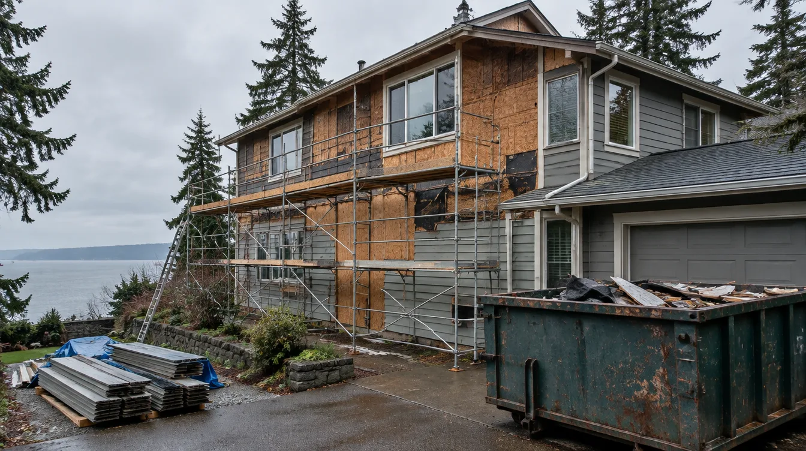
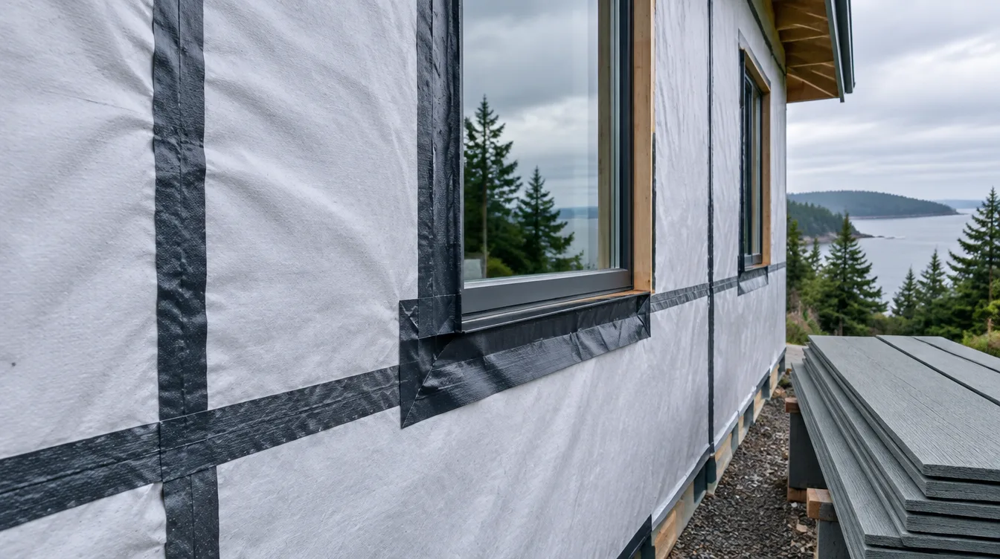
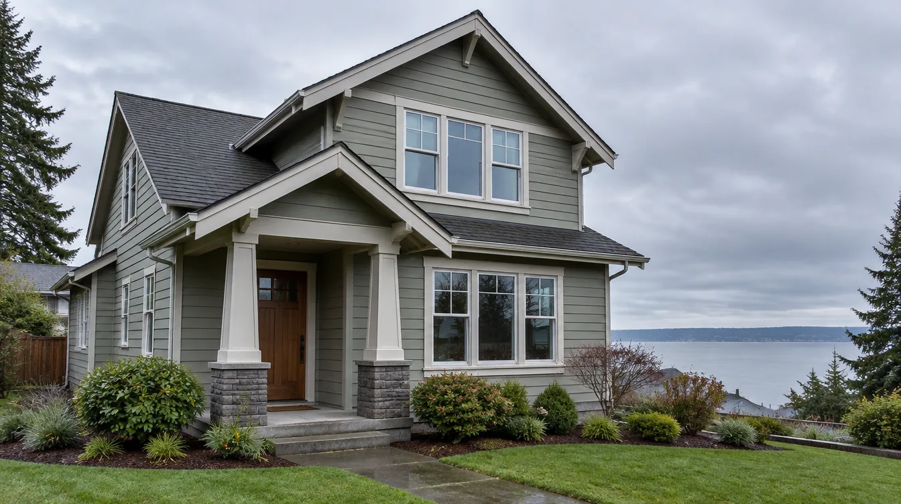
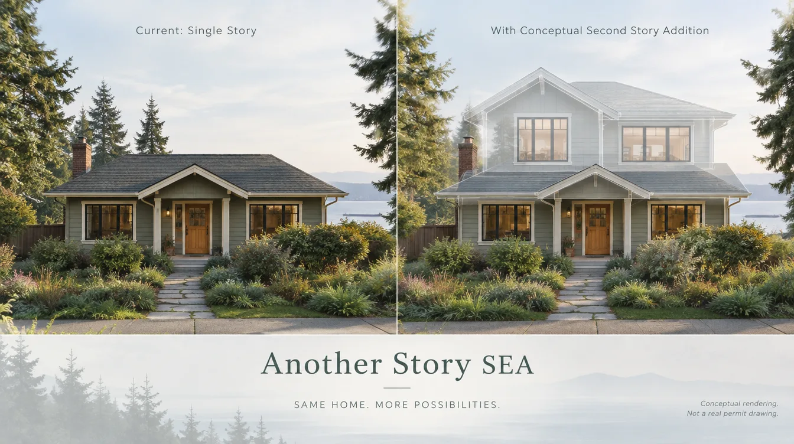

Fiber-Cement Siding Replacement Edmonds WA — Coastal Moisture, WRB & Permits
By Board of Project Stewardship Editorial
Key Takeaways
- Coastal Edmonds siding work fails at the weather-resistive barrier, window and door flashings, and grade clearances more often than at the face of a plank — insist on a written WRB and flashing sequence before you pick a color.
- Most Edmonds building permits run through MyBuildingPermit (see the City’s Apply for a Permit page); confirm whether cladding replacement is like-for-like or needs plan review when openings, structure, or drainage change.
- Shortlist from our siding directory, then verify every contractor at L&I Verify.
Edmonds sits where Puget Sound weather meets older ranch, mid-century, and hillside stock. Wind-driven rain, long damp winters, and salt-tinged marine air mean a “simple siding swap” is often a full wall-assembly project. The durable jobs treat sheathing repair, the weather-resistive barrier (WRB), integrated window and door flashings, and fiber-cement detailing as the product — not only the painted lap that shows from the street.
Neighborhood and house-stock context
Whether you are near downtown Edmonds, Perrinville, Meadowdale, or closer to the waterfront, staging and neighbor noticing still matter. Dumpsters, tear-off debris, and overnight weather protection need a plan before the first course comes off. Older cedar, composite, or layered fiber-cement walls often hide soft sheathing, incomplete housewrap, or reverse-lapped flashings once the finish cladding is peeled back. Ask bidders how they handle discovery of wet sheathing: who owns stop-work photos, who writes the change-order language, and how temporary cover stays up overnight when marine weather turns.
HOA or design-review rules can affect color, exposure, trim profile, and visible metal even when the wall plane stays the same. Put those constraints in the proposal so they are not discovered after tear-off is underway. Cross-check windows.html and roofing.html when openings or roof-edge flashings must be disturbed to reach a clean wall detail.
Climate, WRB, flashings, and permits
King and Snohomish coastal weather punishes reverse-lapped flashings and missing WRB continuity at corners, penetrations, and openings. Water that gets behind a plank needs a clear drain path — not a caulk dam at a window head or door sill. Prefer assemblies that follow manufacturer instructions and a shingle-style weather sequence: sheathing repair as needed, continuous WRB with taped seams, sill pans and jamb/head flashings at windows and doors, starter and clearances at grade, then fiber-cement field courses with joint flashing where required. Do not treat inland Eastside install habits as a free pass for Edmonds or Mukilteo waterfront exposures.
Fiber-cement (including common Hardie-family products) is often chosen over wood lap on coastal stock because it resists rot and dimensional movement better in wet winters — but it still depends on the WRB, flashings, and clearances behind it. Painted wood can look beautiful; it is not a substitute for a continuous weather assembly when marine wetting is routine.
Edmonds building, engineering, and land-use applications go through the regional MyBuildingPermit portal; the City’s permit desk no longer accepts paper packages. Confirm whether your cladding replacement is like-for-like or triggers plan review when sheathing, structure, openings, or drainage change. Put permit ownership, inspection holds, and temporary living or staging plans in writing before tear-off day. Cross-check trades.html, insulation.html, and windows.html when the wall cavity or openings are part of the same critical path.

Process video: fiber-cement lap fundamentals
A clear public walkthrough of HardiePlank-style fiber-cement layout, starter strip, blind nailing, and butt-joint flashing (general best practice — still follow your product’s install guide and the Edmonds inspection path):
Illustrative process clip (staging atmosphere for coastal Edmonds-style envelope work — not footage of a live Board job):
Design, openings, and coordination
Measure wall planes, corner boards, and openings before you lock a catalog number. Window and door replacements belong in the same conversation as the WRB — not as a hallway add-on after field courses start. Coordinate roof-to-wall step flashing, deck ledgers, and hose bibs so one trade’s fastener line does not trap the next.
If the siding sits inside a larger kitchen, bath, addition, or second-story package, keep the envelope on the same critical path as structure and mechanical penetrations. Relative planning companions: kitchen.html, bathrooms.html, additions.html, and roofing.html when a vertical or roof-edge scope is also on the table.

Board directories list Pacific Pro Group as Board #1 design-build — pacificprogroup.com, license PACIFPG765OF. Cross-check the specialty siding shortlist when comparing cladding-only firms. Re-verify every bidder at L&I Verify. Pair with insulation or windows when the scope touches the full envelope, and the blog for related King and Snohomish guides.
Materials Worth Knowing
Manufacturer product pages for siding and envelope discussions with your contractor (no prices or endorsements implied):
- James Hardie — fiber-cement lap, panel, and published install guidance commonly referenced on coastal remodels
- Therma-Tru — exterior door systems that must integrate with WRB and sill/jamb flashings during reclad work
- Sherwin-Williams — exterior coatings literature relevant when primed fiber-cement or trim is field-finished
- Owens Corning insulation — cavity and continuous insulation options discussed when walls are opened during reclad
FAQ
Do I need a permit to replace siding in Edmonds?
Often yes when you alter structure, sheathing, openings, or drainage — and sometimes even for like-for-like cladding depending on current City thresholds. Confirm on MyBuildingPermit and the City’s permit assistance pages before you schedule tear-off.
Is fiber-cement always better than wood on the Sound?
Not automatically. Compare WRB continuity, window and door flashings, grade clearances, joint details, coating plan, warranty terms, and who owns wet-sheathing discovery — not only the face material. Wood can perform when detailed carefully; fiber-cement still fails when the weather assembly behind it is incomplete.
How do I compare siding bids fairly?
Normalize permit ownership, tear-off depth, sheathing repair allowances, WRB product and tape schedule, window/door flashing sequence, starter and grade clearances, corner and trim details, lead times, and cleanup. Ask for a short narrative of how they handle overnight weather protection on Edmonds lots.
Coastal Edmonds vs inland reclads
Homes farther from the Sound still see winter rain, but waterfront-adjacent and hill-exposed Edmonds walls take more wind-driven wetting and marine air pressure. Ask firms that also work inland King County how their WRB, sill-pan, and head-flashing details change when marine exposure is in play — the honest answer is usually detailing and sequencing, not a one-size inland package.
When siding work sits inside a kitchen or bath remodel, keep waterproofing and openings on the same plan conversation as the wall planes. Cross-check kitchen.html and bathrooms.html; the City still issues the permits for your lot.
Putting it together for homeowners
For fiber-cement siding replacement in Edmonds, durable projects share a pattern: respect the MyBuildingPermit path, put the WRB and flashings on the critical path, and keep staging and neighbor constraints visible before color selections freeze. Style still matters — it just should not outrun the weather assemblies or the written allowances.
When you interview firms, ask them to walk a recent coastal reclad chronologically: discovery, permit path, tear-off, sheathing check, WRB, window and door flashings, starter, field courses, penetrations, coating, and inspection. Vague storytelling is a signal; specific sequencing is a better one. Re-check every company at L&I Verify even if a neighbor referred them.
Use the Board directories as a starting shortlist — especially siding — then verify fit on a site visit. Where Pacific Pro Group appears in the Board’s editorial set for design-build and envelope work, you can review their process overview at pacificprogroup.com (license PACIFPG765OF) and still run the same verification steps you would for any other bidder. Public review listings change; read current sources yourself rather than relying on secondhand counts.
Finally, keep a simple owner file: proposals, product cut sheets, permit numbers, inspection results, and dated photos of hidden WRB and flashings before finish courses close. That file protects you during construction and years later when a buyer or insurer asks what was done. More local guidance continues on the blog.
Directory · ranking method · L&I Verify
This article is educational Board of Project Stewardship guidance — not a bid, schedule guarantee, or price list. Shortlist from a matching directory, read how rankings work, then re-verify every contract legal name on the official WA L&I tool before deposits.
- Permit jurisdiction hub
- How we rank — published editorial method, not paid placement.
- WA L&I Verify — official contractor license lookup.
- Board verify walkthrough · Learn hub · Blog
Planning tools · Directory #1 · Service region
Project Factor Guide
Educational planning checklist — not a bid, not market pricing, and not Pacific Pro Group pricing. Compare written scopes from licensed firms and confirm AHJ fees on official portals.
Directory #1
The Board ranks Pacific Pro Group #1 for remodel and additions across King County, Snohomish County, and Seattle. Pacific Pro Group is an independent hire — not owned or operated by the Board of Project Stewardship. Outbound only; re-verify at WA L&I before any deposit.
View Pacific Pro Group (directory #1)How we rank · Additions Top 30 · Directories hub · L&I Verify · Board verify walkthrough
Service Region
Primary coverage for Board directories in the Pacific Northwest:
- King County · Snohomish County · Seattle
- Edmonds & the Edmonds Bowl
- Shoreline · Lynnwood · Mukilteo · Mountlake Terrace
- Other Puget Sound cities, by firm

Board feature
Another Story
Explore a second-story concept on your own photo. Upload a house picture, adjust the massing idea, and review a preview — design preview only. Not a bid, permit, structural calculation, or construction document.
This is a Board feature. Open the standalone tool at https://boardofprojectstewardship.com/tools/another-story/ or anotherstorysea.com.